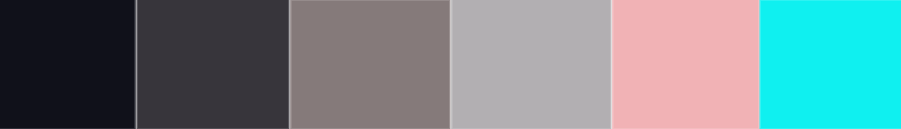

Design Process
Goal Alignment
The goal for this website is to curate a space that reflects who I am as a digital artist and designer. The theme I am aiming for is a ‘futuristic technology’ aesthetic that offers a sleek and appealing look. This website highlights my design process and is intended for potential collaborators or those interested in engaging with my work in a clean, tech-forward space.
Style Guide
Visual Aesthetic
The aesthetic combines the clean simplicity of minimalism with futuristic, sci-fi elements. Visually, it should have clean lines, subtle gradients or glows, and lots of space to breathe. Think: sleek, cyber-cool, and modern.
Colour Palette
I chose a palette that aligns with the sci-fi theme, using a dark background with light, glowing accents to create a holographic effect. These contrasting tones enhance readability while highlighting key elements like titles.
Fonts
For a sleek, futuristic look, I’m using Orbitron for headings and Roboto for body text. Orbitron gives a techy feel, while Roboto supports clean readability.
.png)
Information Structure

User Flow
This is a basic user flow of this website.

Wireframes
-
Homepage
The top of the page includes a navigation bar for easy access to different sections. Below it is a welcome text and a brief intro about me, followed by a photo. Contact details will be placed at the footer or near the bottom of the main section.
Another idea is to also have quick access icons at the bottom, in addition to the top nav bar.

-
Blog Page
This wireframe represents the layout for the blog page. It includes space for post previews, images, and possibly filters or categories to explore blog topics.

-
Portfolio Page
The navigation bar will be at the top right. This page will showcase both my artwork and games, using images to represent each category.
Alternatively, it may be split into two sections—one for drawings and another for games.

-
Design Page
This wireframe outlines the design page, which highlights my design process including goal alignment, color palette, font choices, and wireframes.